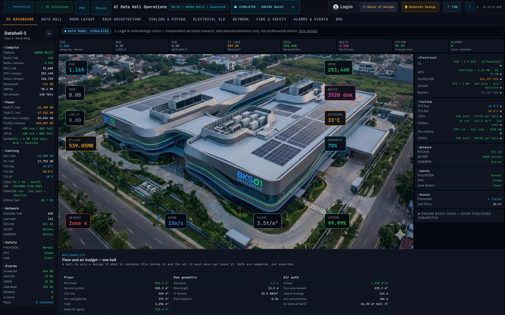
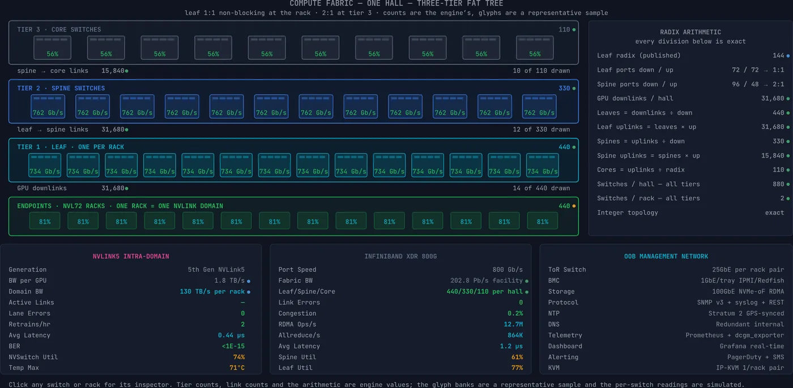
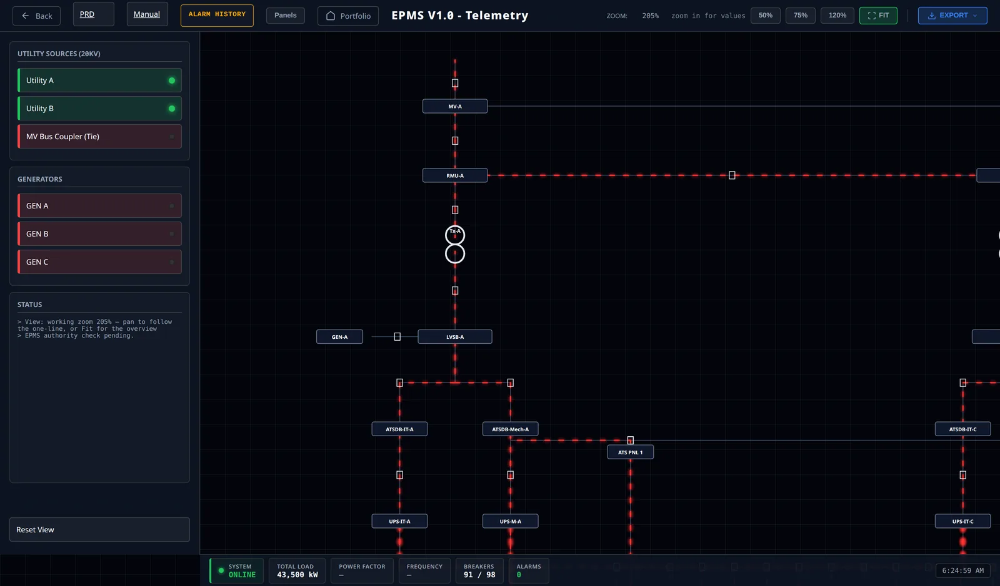
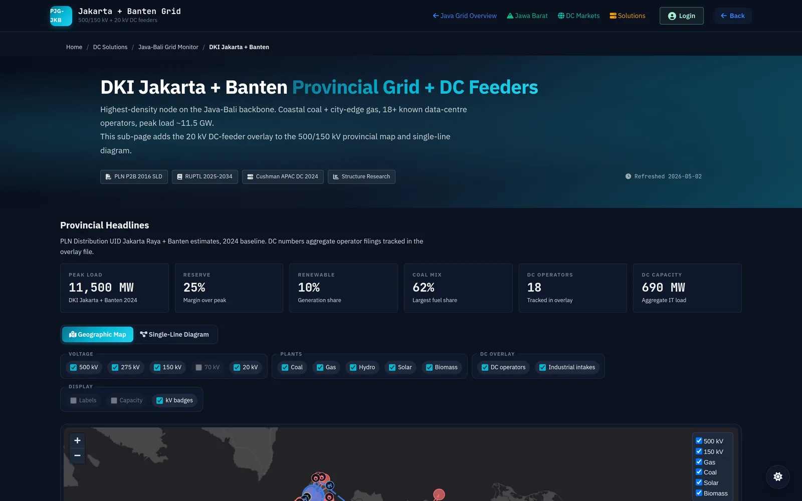

DC Solutions · engineering & telemetry
Plan, cost and commission a data center with numbers an engineer would sign.
Twenty-one calculators, seven engines and nine operations cockpits share one method: every figure is computed from a declared basis, carries its registry id, and can be traced to the line that produced it.

Computed against
ASHRAE TC 9.9TIA-942-CUptime Institute TierNFPA 75 · 76 · 2001 · 855ISO 50001 · 30134EN 50600GHG Protocol01 / The engine
One engine, instrumented end to end. Power in, heat out, every count derived — never typed. Hover any box; the readout is the engine's own row.
Hover or focus a box to read its rows · double-click or Enter opens where it is computed · drag sideways on a phone
02 / What the engine answers
Four questions every owner asks. Answered from the same snapshot the cockpit runs on.
PUE by weather bin
- PUE calculator — the bin method, your climate
- Carbon footprint — grid factor, CUE
- OPEX — the energy line it drives
Temperature planes
- CDU comparison — approach, flow, published duty
- Air vs liquid — where the cliff moves
- Method — the 23 planes, derived
The fleet
- Spares readiness — what the fleet needs on the shelf
- Tier advisor — N, N+1, 2N, per system
- Cx calculator — the test programme, sized
03 / Two platforms
Two buildings, one method. An AI campus at 142 kW a rack and a conventional site at 8 — both run as operations cockpits, both auditable.
DC AI / HPCGB300 NVL72 · 8 halls · 539 MW IT · warm-water dry cooling

- Electrical 150 kV intake, 16 main transformers, 528 unit substations, a 20 kV board whose fault level is checked against the gear.
- Cooling 85 % of the heat leaves on water at 40/50 °C and never meets a chiller on the design day.
- Network 7,040 fabric switches, 253,440 CX-8 ports, a radix check that must come out integer.
- Open the cockpit →
DC ConventionalEPMS · data hall · chiller plant · fire · fuel · water · ICT

- EPMS the single-line as the operator sees it: breakers, ATS, bus couplers, 91 of 98 closed.
- Chiller plant primary–secondary to the DAHU/CRAH terminals, flow and ΔT on the same screen.
- Fire, fuel, water each a P&ID with the instrument tags and the cause-and-effect matrix.
- Open the cockpit →
04 / The instruments
Build, operate, compare, export. Each calculator states its inputs, its basis and its unit before it prints a number.
Calculators
Twenty-one, grouped by the decision they serve. Every output row carries a basis; CSV export on all of them.
| Instrument | Computes | Basis |
|---|---|---|
| CAPEX | Build cost per MW and per rack, by system | Uptime · vendor list prices |
| OPEX | Energy, water, staff, maintenance per year | PUE × tariff |
| TCO | Build vs lease vs cloud, 10 years | NPV at your rate |
| PUE | Design-day and annual PUE by weather bin | ASHRAE bins |
| Carbon | CUE and scope-2 tonnes from the grid factor | GHG Protocol |
| Tier advisor | Redundancy per system against a target tier | Uptime · TIA-942 |
| Spares | Shelf stock from MTBF and the fleet count | Fleet × failure rate |
| Cx | Commissioning programme, levels 1–5 | ASHRAE G0 |
Interpolated between the engine's weather bins — the same table the cockpit runs on. Run it with your climate →
Grid monitors
Where the power is, region by region: the Java–Bali backbone at 500 and 150 kV, the 20 kV data-center feeders, known operators and intakes.

| Jakarta + Banten | Highest-density node; coastal coal and city-edge gas | RUPTL 2025–34 |
| Jawa Barat | The hydro and the Cirata floating solar | PLN P2B |
| Jawa Tengah | Batang and the 500 kV spine east | PLN P2B |
| Historical | Load and outage record, 2019 → | PLN annual |
Labs and standards
The methods behind the numbers, each as a workbench you can run: thermal control, tiers, fire agents, topology readiness, energy KPIs.
| Standards workbench | ASHRAE · Tier · NFPA 2001 · TIA · ISO 30134/50006, one plant model | 344 assertions |
| System modelling lab | DH-01 solved: air, liquid, CFD, the report | solver-held |
| Technical manuals | How each engine computes what it prints | public |
| Glossary | Every abbreviation the pages use | 1,100 terms |
Incident library
Forty-three data-center incidents, each with its sequence of events, a retrospective FMEA and a role-by-role response — the failure chain and fishbone drawn through the same diagram engine as this page.
| Browse the library | By system, by severity, by year | 43 dossiers |
| Technical journal | Articles with living diagrams and sourced charts | 27 articles |
| Market tracker | APAC capacity, operators, pipeline | Cushman · CBRE |
05 / Who
Built by a certified data-center engineer. Not a content team.
Bagus Dwi Permana leads engineering operations for mission-critical facilities in Bekasi, Indonesia. The site is his working method, published: the same checks he runs before a switching order are the gates every page here passes before it ships.
CDCP · CDCS · ATD · ATS
ISO 50001 lead auditor
Profile and record →
06 / Questions
Where do the numbers on this page come from?
From js/dcai-engine.js, the DC AI engine, computed in your browser from a declared model (js/dcai-model.js). Every value carries a registry id; the readout beside the drawing prints it.
Is the 500 MW campus a real site?
No. It is an adopted GB300 scenario — simulated, not measured telemetry — built so that every count is derived and every check can fail. The engine says so in its own metadata.
Do I need an account?
The calculators, grid monitors, manuals and the journal are open. The two operations cockpits and the labs ask for a sign-in because they carry the full model.
Can I export?
Every calculator exports CSV; the cockpits export a Tech Spec PDF; the labs export the engineering report.